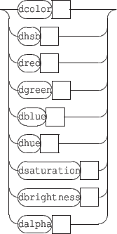
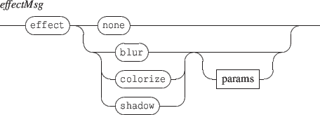

Next: 4.2 File based components
Up: 4. The 'set' message
Previous: 4. The 'set' message
Contents
Index
4.1 Inline components
Format of the set message is:

- txt: a textual component.
- html: an html component defined by an HTML string.
- gmn: a Guido score defined by a GMN string.
- svg: SVG graphics defined by a SVG string.
- graph: graphic of a signal. See section 11 p.
![[*]](crossref.gif) for details about the graph objects data.
for details about the graph objects data.
- fastgraph: fast rendering graphic signal. See also section 11 p..
- rect: a rectangle specified by a width and height. Width and height are expressed in scene coordinates space, thus a width or a height of 2 corresponds to the width or a height of the scene.
- ellipse: an ellipse specified by a width and height.
- polygon: a polygon specified by a sequence of points, each point being defined by its (x,y) coordinates. The coordinates are expressed in the scene coordinate space, but only the relative position of the points is taken into account (i.e a polygon A = { (0,0) ; (1,1) ; (0,1) } is equivalent to a polygon B = { (1,1) ; (2,2) ; (1,2) }).
- curve: a sequence of 4-points bezier cubic curve. If the end-point of a curve doesn't match the start-point of the following one, the curves are linked by a straight line. The first curve follows the last curve. The inner space defined by the sequence of curves is filled, using the object color. The points coordinates are handled like in a polygon.
- line: a simple line specified by a point (x,y) expressed in scene coordinate space or by a width and angle. The point form is used to compute a line from (0,0) to (x,y), which is next drawn centered on the scene.
- grid: a white transparent object that provides a predefined time to graphic mapping (see section 6.4 p. for more details and section 9 p. for time to graphic relations). The parameters are int32 values representing the number of columns and rows.
- faust: a FAUST object (see section 12)
NOTE The default position of any component is [0,0]. Objects are drawn centered on their position.
Text may be specified by a single quoted string or using an arbitrary count of parameters that are converted to a single string with a space used as separator.

Next: 4.2 File based components
Up: 4. The 'set' message
Previous: 4. The 'set' message
Contents
Index
Grame - INScore project